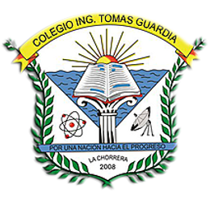
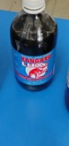
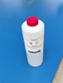
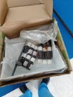
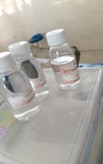
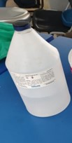
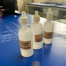

Ministerio de Educación
COLEGIO INGENIERO TOMAS GUARDIA
Grupos :
12ºH
12ºF
Materia :
Quimica
Profesor :
Michelle Jimenez
Asignatura :
Proyecto Trimestral Final
Equipo de Programadores :
12ºH :
Miguel Sánchez (Desarrollador principal)
Cristian Lara
Samuel Sánchez
12ºF :
Gustavo Gómes (Desarrollador principal)
Alvin Ponce
Diego jones
Colegio Ingeniero Tomas Guardia
Departamento de: Informatica
Inventario Del Laboratorio De: Quimica
A continuación se les mostrará información sobre los equipos de cristalería que se encuentran en un laboratorio químico. Estos elementos de cristalería son muy importantes, ya que en ellos se realizan procesos como la destilación, el almacenamiento de reactivos químicos, la preparación de compuestos, entre otras cosas más que se explicarán a medida que se detallen las funciones de cada uno de estos elementos.
| Nombre | Imagen | Cantidad | Pictograma de seguridad (para los reactivos) |
|---|---|---|---|
| Kangaru |  | 1 |  |
| Botella de acido clorhidrico de 1L |  |
2 |  |
| Acetona |  | 1 |  |
| Alcohol Desnaturalizado |  |
1 |  |
| Agua Destilada |  |
2 | |
| HexameThylene |  | 18 |  |
| HCL (acido clorhidrico) |  | 2 |  |
| Neutral Red |  |
6 | |
| Etanol |  | 1 |  |
| Fenolftaleína alcohólica |  | 3 |  |
| Ácido acético |  |
2 |  |
| Sal sin Yodo |  |
1 | Sin Pictograma de seguridad |
| HC | SIN IMAGEN | 2 |  |
Colegio Ingeniero Tomas Guardia
Departamento de: Informatica
Inventario Del Laboratorio De: Quimica
A continuación se les mostrará información sobre los equipos de cristalería que se encuentran en un laboratorio químico. Estos elementos de cristalería son muy importantes, ya que en ellos se realizan procesos como la destilación, el almacenamiento de reactivos químicos, la preparación de compuestos, entre otras cosas más que se explicarán a medida que se detallen las funciones de cada uno de estos elementos.
| Nombre | Imagen | Cantidad | Usos (para los equipos y cristalería) |
|---|---|---|---|
| Matraz de fondo redondo de 25ml | 3 | El matraz de fondo redondo se utiliza ampliamente para preparar soluciones químicas, también es utilizado para la destilación de componentes químicos. | |
| Vial | 2 | Los viales se utilizan para almacenar reactivos químicos, soluciones, muestras biológicas, líquidos y polvos. | |
| tubo de ensayo de 5ml | 11 | El tubo de ensayo se utiliza para contener líquidos o sólidos en pequeña escala también se utiliza para evaluar propiedades físicas, como la solubilidad o la densida. | |
| tubo de ensayo de 10ml |  |
33 | se utiliza para contener líquidos o sólidos en pequeña escala. |
| Embudo de separación de 125ml | 4 | Es utilizado para la extracción de líquido-líquido, para la separación de fases y la purificación de compuestos | |
| Generador de Gas | 2 | Uno de los usos más importantes de los generadores de gas en la industria química es la producción de amoniaco también son utilizados en reacciones de combustión o síntesis que requieren oxígeno como reactivo, los generadores de gas proporcionan este gas de manera controlada. | |
| Embudo de cerámica grande | 1 | se utiliza para filtrar líquidos y separar impurezas sólidas. | |
| Embudo de cerámica mediano | 1 | Gracias a su forma cónica y boquilla estrecha, el embudo permite transferir líquidos de un recipiente a otro sin derrames ni pérdidas. | |
| Embudo de cerámica chico | 1 | En procesos de destilación, el embudo ayuda a canalizar los vapores condensados hacia otro recipiente. También se utiliza en la decantación, un método de separación de sustancias, donde se separa un líquido de otro o un líquido de un sólido. | |
| Agitador | 3 | Se usa para agitar mezclas reactivas y como accesorio en el trasvase de líquidos | |
| Bureta | 2 | sirven para medir volúmenes de líquidos con mayor precisión y exactitud | |
| Matraz Volumétrico de 25ml |  |
1 | Sirve para preparar volúmenes exactos de concentraciones. |
| Matraz Volumétrico de 50ml |  |
1 | En procesos de titulación, donde se mide la cantidad de una sustancia mediante una reacción química, el matraz volumétrico es insustituible |
| Matraz Volumétrico de 250ml | 1 | En la producción de medicamentos, cada mililitro cuenta. Los matraces volumétricos garantizan que las dosis sean precisas y consistentes. | |
| vaso precipitado de 250ml | 44 | Es utilizado para medir volúmenes aproximados de líquidos. | |
| vaso precipitado de 50ml | 12 | Es utilizado para mezclar reactivos, diluir sustancias y obtener la concentración deseada. | |
| vaso precipitado de 100 ml | 5 | Aunque esta no sea su función principal también es utilizado para realizar reacciones químicas.. | |
| Vaso precipitado de 500ml |  |
2 | Se pueden calentar líquidos en él o combinar sustancias para obtener precipitados |
| vaso precipitado de 600ml |  |
1 | se utiliza para transportar líquidos a otros recipientes. También se puede utilizar para calentar, disolver o preparar reacciones químicas |
| Matraz de Erlenmeyer de 250ml | 22 | Es utilizado para calentar líquidos | |
| Matraz de Erlenmeyer de 50ml | 2 | Es utilizado para realizar destiliciónes sencillas | |
| Matraz de Erlenmeyer de 100ml | 3 | es utilizado para realizar una reacción en cantidades moderadas. | |
| Matraz de fondo plano de 250ml |  |
8 | se utiliza para calentar líquidos en destilación o evaporación ya que su fondo esférico favorece la concentración de calor. |
| Matraz de fondo redondo de 250ml | 8 | se utiliza para realizar reacciones inclusive en altas temperaturas. Su fondo esférico favorece la concentración de los reactivos, no se puede apoyar en una superficie plana, por lo que se utiliza un soporte. | |
| Matraz de 3 boquilla de 250ml |  |
1 | Es utilizado para procesos de destilación y ebullición que facilita el calentamiento uniforme de las sustancias que contenga, para mezclar sustancias. |
| Pinzas de soporte universal | 2 | ESirve para sujetar instrumentos en el montaje de sistemas. | |
| vidrio reloj | 2 | se utiliza para evaporar líquidos en pequeñas cantidades, pesar una cantidad específica de sólido en una balanza analógica también se utiliza como cubierta en vasos de precipitado o beakers para evitar la entrada de polvo o contaminantes. | |
| Mechero | 13 | Es utilizado para el Calentamiento de Muestras, Esterilización, Destilación, Evaporación, Combustión y Descomposición | |
| Capsula de porcelana | 5 | se utiliza para evaporar solventes y concentrar soluciones, carbonizar compuestos químicos, realizar reacciones químicas a pequeña escala. | |
| termómetro | 10 | se utilizan para controlar la temperatura durante reacciones químicas, Durante procesos de destilación o evaporación, el termómetro ayuda a mantener la temperatura adecuada. | |
| Botella de reactivos | 9 | Las botellas de reactivo garantizan un almacenamiento seguro y organizado de las sustancias químicas, también proporcionan una forma segura y precisa de medir sustancias químicas. | |
| Cilindro de vidrio | 3 | Se usan para preparar, disolver o calentar directamente sobre rejillas o planchas de calentamiento | |
| Embudo de seguridad | 3 | ayuda a prevenir derrames y salpicaduras al verter líquidos. Es especialmente útil cuando se trabaja con productos químicos peligrosos o volátiles. | |
| Pipeta de 10ml | 5 | Las pipetas se utilizan para medir volúmenes precisos de líquidos, también se emplean para transferir líquidos de un recipiente a otro. | |
| Cubre Objetos | 140 | Cubren y protegen las preparaciones u objetos que se observarán al microscopio e impiden que se desprendan o muevan al ser observados. | |
| Papel filtro de 125mm |  |
194 | Es utilizado para la filtración de sólidos, también es utilizado para el análisis Gravimétricos. |
| Condensador | 2 | los condensadores se utilizan para convertir vapores en líquido, En algunas reacciones químicas, los condensadores se emplean para enfriar los vapores generados. | |
| Condensador de destilación | 6 | El condensador es esencial en el proceso de reflujo. En esta técnica, los vapores calientes de un disolvente se enfrían dentro del condensador, permitiendo que caigan en forma de gotas. | |
| Cabezal para destilación | 6 | Su función principal es llevar a cabo la destilación, que es un método para purificar y separar líquidos. | |
| Embudo de seguridad | 4 | SEs utilizado para evitar derrames de disolventes y otras sustancias químicas. | |
| Alargadera para condensador | 2 | se utiliza para alargar los aparatos de destilación | |
| Kit de destilación | 2 | se emplea principalmente para separar y purificar líquidos. | |
| Embudo | 4 | Es útil para separar sustancias por medio de filtración y para evitar su desperdicio o derramamiento al ser cambiadas de un recipiente a otro. |